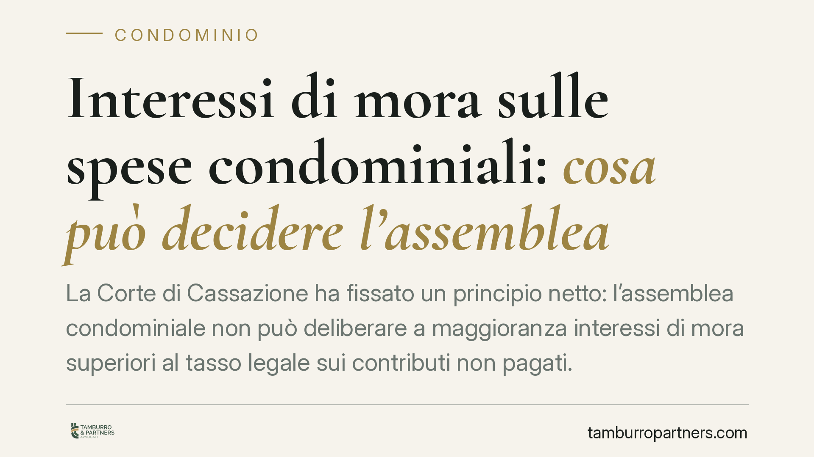

Interessi di mora sulle spese condominiali: cosa può decidere l'assemblea
La Corte di Cassazione ha fissato un principio netto: l'assemblea condominiale non può deliberare a maggioranza interessi di mora superiori al tasso legale sui contributi non pagati. Serve l'unanimità. Una precisazione che incide sui bilanci, sui regolamenti e sulle azioni di recupero crediti. Vediamo cosa cambia per proprietari e amministratori.

Il caso
Quando un condòmino non versa le quote deliberate, il condominio subisce un danno: deve comunque pagare fornitori e manutenzioni. Da qui la tentazione di prevedere in assemblea o nel regolamento interessi di mora "pesanti", superiori al tasso legale, per scoraggiare i ritardi.
La Corte di Cassazione (sentenza n. 10196/2013) ha stabilito che questa scelta non rientra nei poteri ordinari dell'assemblea deliberati a maggioranza. Un aumento del tasso oltre quello legale incide sul patrimonio individuale del singolo e richiede il consenso di tutti i condòmini.
Inquadramento normativo
Il punto di partenza è l'art. 1284 del Codice civile, che fissa il tasso di interesse legale (rideterminato annualmente con decreto del Ministero dell'Economia). In assenza di diversa pattuizione valida, è questo il tasso applicabile ai crediti pecuniari, comprese le spese condominiali non pagate.
L'assemblea opera nei limiti fissati dagli artt. 1137 e 1138 c.c.: può deliberare sulla gestione delle cose comuni e adottare un regolamento, ma non può imporre obbligazioni che gravano sulla sfera patrimoniale del singolo proprietario oltre quanto la legge o il contratto già prevedono. Fissare interessi di mora superiori al tasso legale significa, in sostanza, modificare in peius la posizione debitoria del condòmino: è un atto di natura negoziale che pretende l'unanimità.
La maggioranza, quindi, può decidere di agire per il recupero, applicare il tasso legale e addebitare le spese di sollecito documentate. Non può creare, da sola, una penale mascherata da interesse.
Implicazioni pratiche
Per il condòmino moroso il principio è una tutela: nessuna delibera a maggioranza può caricarlo di interessi eccedenti il tasso legale. Se il verbale prevede tassi più alti approvati senza unanimità, quella parte della delibera è impugnabile.
Per l'amministratore la lettura è opposta ma altrettanto operativa: le clausole "punitive" inserite in molti regolamenti assembleari sono fragili. Fondare su di esse un decreto ingiuntivo espone il condominio al rischio di opposizione e di soccombenza sugli interessi eccedenti.
Resta valido, invece, il regolamento di natura contrattuale: se il tasso maggiorato è previsto in un regolamento accettato da tutti i proprietari (tipicamente in sede di acquisto, per richiamo nell'atto), la pattuizione può reggere, entro i limiti dell'usura e della clausola penale riducibile ex art. 1384 c.c.
Attenzione anche al bilancio: iscrivere a preventivo interessi di mora non dovuti gonfia artificialmente le posizioni debitorie e può alimentare contenzioso interno.
Cosa fare in concreto
- Verifica il titolo: prima di applicare interessi superiori al legale, controlla se derivano da una delibera a maggioranza (fragile) o da un regolamento contrattuale accettato da tutti (potenzialmente valido).
- Amministratore: fonda il recupero crediti sul tasso legale e sulle spese documentate; evita di richiedere interessi "da regolamento assembleare" senza base contrattuale.
- Condòmino: se ricevi un sollecito o un ingiunzione con interessi sproporzionati, controlla il verbale e i quorum; valuta l'impugnazione nei termini dell'art. 1137 c.c.
- Impugnazione tempestiva: la delibera annullabile va contestata entro trenta giorni; non lasciar decorrere il termine confidando in un'illegittimità "evidente".
- Rivedi il regolamento: se il condominio vuole tassi maggiorati stabili, valuta con un legale l'introduzione di una clausola nel regolamento contrattuale, con l'unanimità richiesta.
Un principio che dura
La pronuncia del 2013 conserva piena attualità: il perimetro del potere assembleare non tocca la sfera patrimoniale individuale oltre i limiti di legge. È una regola di equilibrio tra efficienza della gestione comune e tutela del singolo. Chi amministra deve saperla applicare per costruire azioni di recupero solide; chi subisce pretese eccessive deve conoscerla per difendersi entro i termini.
Consigliamo, in ogni caso, di sottoporre a verifica preventiva i regolamenti e le delibere che incidono su interessi e penali, evitando di trasformare uno strumento di deterrenza in una fonte di contenzioso.
---
Contributo informativo a cura di Tamburro & Partners - Avv. Giuseppe Tamburro. Non costituisce parere legale.
Ogni condominio ha una storia a sé.
Se gestisci un'amministrazione e vuoi un confronto su una specifica questione condominiale, scrivi allo studio. Ti rispondiamo entro un giorno lavorativo.